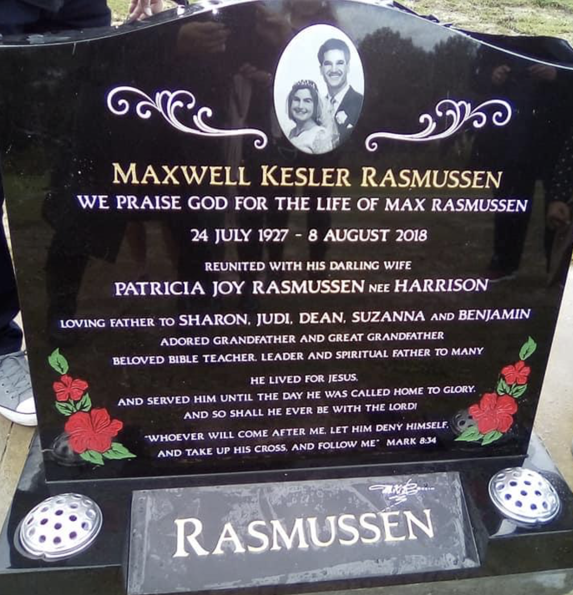

Beloved Bible Teacher

Bible Study Ministry Founder

Great Grandfather
.PNG)
Preacher
Life
Tributes
- This man had been such an inspiration in our lives, was born into his ministry and through him was taught God’s word; the spiritual values I know as a trying Christian today. All glory be to God for such a beautiful soul and I’m grateful to have met him in this lifetime. Dimary Ulberg
- Wonderful Father figure to many. Encouraged us to count the cost and follow Jesus. Read, read and read the Bible. Seek revelation knowledge of God. We’ve been blessed indeed by his life and have sheltered under his covering. Now he is home having lived well and full. Derek Jones
- He is remembered for his love of the Bible, for leading many souls to accept Jesus Christ as lord and Savior, and for playing sweet sounding music for worship. P.M. of Samoa
- The legend himself known as a good warrior of his Faith🙌...We salute you for always standing boldly to the Word of God. We miss everything about you from lollies scramble and chocolates to cracking jokes, from counseling sessions to sharing the Word of God and from Meal prepping to car rides, We miss that smile that's always cheerful and loving, you never make anyone feel bad or sad its always that positivity in you that makes everything move.Even though you are not here in the flesh but we can feel your presence in whatever we do and all for the glory of God... You are a PERFECT✊ ROLE MODEL in our lives and we are the fruits of your never-ending work until the day you left us...We love and miss you so much, Papa Max...😘😘 by Nathaniel Crichton
- Thank you for everything you have done for us Papa! Thank you for the word and encouragement you have blessed each and every one of us with. There will never be anyone like you, Papa, because you are one in a million..by Julia F.
- Papa Max, you truly are and were an amazing man. Your smile lit up every room. I will forever cherish your memories. I can just hear your voice saying "Read Your Bible". We will forever love and miss you! by Masaga I.
- We celebrate your triumphant entrance into the pearly gates of heaven. We will always remember your kindness and your love for the body of Christ. We love you Papa Max adn we miss your presence here on Earth. Please give Jesus a big fat hug from us! by Wotta
- We have all been dreading the day that you would leave us on this earth our dearest Dad. Days of weeping and filled with emotion HOWEVER we all know you fought the fight of faith and paved the way for us and many many others. We know you are laughing and running with those faithful who have gone on before. We love you and it's hard to believe we shall not see you for a while. by Sharon